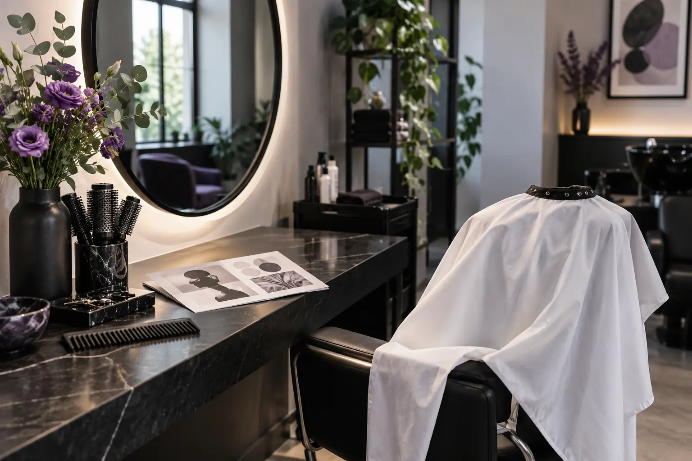

Kaip pasiruošti kirpimui ir ar prieš vizitą plauti plaukus?
Autorius: Madbeauty redakcija · Numatyta 2026 m. spalio 27 d. 10:00 (Lietuvos laiku)
Prieš kirpimą plaukite plaukus pagal specialisto nurodymą. Sužinokite, ką pasitikslinti ir kaip parodyti įprastą plaukų tekstūrą.

Prieš kirpimą plaukus plauti ar ne, priklauso nuo specialisto darbo būdo — vienos taisyklės nėra. Pasitikrinkite, ar atvykti su švariais, sausais ar įprastai suformuotais plaukais ir ar juos reikės išplauti vietoje. Jei nurodymo negaunate, nekeiskite įprastos rutinos vien iš nuogirdų: atvykę pasakykite, kad pasiruošimo instrukcijos neturėjote.
Trumpas pasiruošimo sprendimas
- Gavote plovimo nurodymą? Laikykitės jo ir pasitikrinkite, ar svarbu, kad plaukai būtų sausi, drėgni ar be formavimo priemonių.
- Gavote nurodymą neplauti arba atvykti su sausais plaukais? Atvykite taip, kaip sutarta; nebandykite prieš vizitą naujo formavimo būdo.
- Nurodymo nėra? Paklauskite, kaip turi atrodyti plaukai ir ar plovimas numatytas vizito metu. Jei atsakymo negaunate, ateikite su įprastai nešiojamais plaukais ir apie tai pasakykite specialistui.
Kaip parodyti įprastą plaukų tekstūrą
Pasiruoškite trumpai papasakoti, kaip dažniausiai nešiojate plaukus ir kaip juos formuojate kasdien. Jei įprastai nešiojate garbanotus ar banguotus plaukus, parodykite jų įprastą formą. Jei dažniausiai juos tiesinate ar kitaip suformuojate, pasakykite, kokia jų tekstūra natūraliai; prireikus galite parodyti įprastos šukuosenos nuotrauką.
Prieš išvykdami galite pasitikslinti tris dalykus: ar plauti plaukus prieš vizitą, kokios būklės jie turi būti atvykus ir ar vizito metu numatytas plovimas. Taip pat pasakykite, kokių priemonių naudojote tą dieną, jei jos pakeitė įprastą plaukų formą.
Amerikos dermatologų akademija pažymi, kad šlapių plaukų tvarkymo patarimai priklauso nuo tekstūros. Tai bendroji plaukų priežiūros informacija, o ne konkretaus salono kirpimo protokolas. Daugiau: AAD rekomendacijos apie plaukų formavimą
Jei dar renkatės kirpimo kryptį, platesnis gidas „Kaip pasirinkti kirpimą: plaukų tekstūra, veido forma ir vizito eiga“ padės pasiruošti pokalbiui su specialistu.
Norėdami peržiūrėti nacionalinį pasirinkimą, atverkite Kirpimas ir pasirinkite miestą. Katalogo kategorija pati savaime nepatvirtina konkretaus teikėjo ar laisvo vizito laiko.
Planuojamos vidinės nuorodos
Šaltiniai peržiūrai
- AAD · formavimas ir plaukų pažeidimas — Perskaitytas AAD dokumentas: per didelis karštis ir ilgalaikis stiprus plaukų įtempimas gali kenkti; šlapių plaukų tvarkymo patarimai priklauso nuo tekstūros. Jokios universalios temperatūros, sekundžių, gydymo ar plaukų slinkimo diagnozės. Trumpai tik aktualiam saugos aspektui, iki20 žodžių; šukuosenų pasirinkimas nėra medicininė rekomendacija.
- Cut and clipper hair using hairdressing techniques — Read pp1–7 consultation, natural perimeter/growth pattern/curl classification, shape and separate preparation advice. Professional standard supports terminology and consultation relevance only; no clinical eligibility or DIY cutting instructions; not Lithuanian licensing advice.